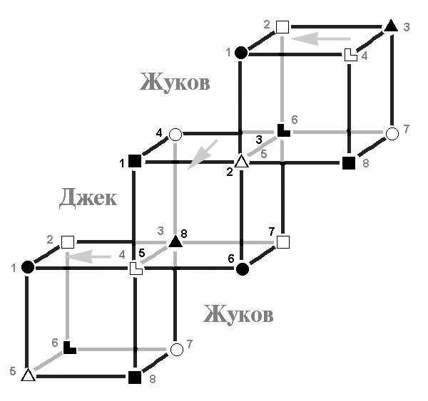

3.1. Заказ: Иисус (Джек, ЛИЭ) → Русь (Жуков, СЛЭ)
|
Некогда один духовный искатель накурился ночью анаши на кладбище города Пуны и осознал Смысл Всего. Наутро, конечно, опять забыл. Ра-Хари, "Руководство для начинающего медитатора" |
Отношения социального заказа потому так и называются, что обеспечивают коррекцию общества в социальном плане, объединяют его в единое целое.
Рассмотрим взаимодействие подробнее в контексте нашей темы. Инфообмен идет по четырем ребрам – отношения средней плотности.
I. Заказчик → подзаказный, 2 → 5 БИ, 3 → 6 ЧЭ.
Заказчик выдает информацию со своей творческой (2) на суггестивную функцию (5) подзаказного, при этом одновременно с ролевой (3) на референтную (6) идет подкрепление. Обратите внимание, что таким образом происходит цельное воздействие на детский блок (5,6), что дает очень сильную суггестию. Заказ принимается с радостью, но выполняется не для заказчика, а выдается наружу, в социум. Так сказать, «реализация мечты детства».
В контексте разговора это обозначает, что Жуков готов немедленно и радостно выполнить то, что Джеку кажется необходимым. Т.е. идея о необходимости срочного спасения христианским способом принимается легко и непринужденно, без критического анализа. Причем тут важней не возможность этого анализа (достаточно проблематично критически проанализировать идею «спасения»), а наличие априорной готовности принять, а не отвергнуть, вытекающее из рассматриваемого взаимодействия.
II. Заказчик → подзаказный, 5 → 4 БЭ, 8 → 3 ЧИ.
Влияние суггестивной (5) БЭ заказчика на болевую (4) подзаказного пренебрежимо мало, но при этом обратное воздействие достаточно неприятно. Одновременно происходит процесс передачи информации с демонстративной (8) на ролевую (3), что также весьма незначительно по мощности, а обратный процесс маловероятен (разумеется, если этого не делать специально).
Таким образом, по этому ребру взаимодействие очень слабое, но несколько неприятное по БЭ. В контексте: хотя идея Иисуса принимается легко, для него самого отношения с подзаказным несколько напряжены. Исторически эти отношения не проявлялись: на Русь пришла уже церковь, а не Иисус, и его изначальные идеи отнюдь не продвигались церковью. Впрочем, можно отнести к описываемому взаимодействию напряженные отношения всеразличных «еретиков», которые пытались вернуться к учению Христа, с официальным государственным аппаратом Руси.
III. Заказчик → подзаказный, 6 → 1 ЧС, 7 → 2 БЛ.
С референтной (6) на базовую (1) воздействие, разумеется, практически не идет, обратно же информация передается, причем при этом воспринимается как должное – заказчик учится у подзаказного.
Воздействие ограничительной (7) на творческую (2) малоприятно, так как гасится творческая деятельность.
Итак, по этому ребру взаимодействия получаем, что приверженцы учения Христа учатся у государства по силовой сенсорике. Но поскольку силовые методы – это не стиль Иисуса, тем самым происходит искажение его этики и учения в целом. Причем это понимается как насущная необходимость «для святого дела», изменение же сути не осознается.
Приверженцы Иисуса тормозят творческую энергию русского народа, начиная с периода самого начала христианизации. В качестве иллюстрации вспомните, какова была ситуация с художественными произведениями на Руси. В то время, когда в Европе шло Возрождение – на Руси лишь писали иконы по строгому канону, скульптур практически не создавали вообще, книги издавались преимущественно церковные и т.д. Одновременно шли репрессии по отношению к народному искусству, оставшемуся от языческих времен (см. материалы Стоглавого Собора 1551 г.). В XVII веке церковники даже принудительно вывели из употребления русские имена. [43]
Дополнительно стоит обратить внимание на то, что направленность эго (обозначено на рисунке светло-серыми стрелочками) заказчика идет на подзаказного, т.е. этот процесс вполне осознается: последователи Христа тормозили развитие Руси практически специально. Подзаказный же «смотрит в сторону» и этого не замечает.
IV. Заказчик → подзаказный, 1 → 8 ЧЛ, 4 → 7 БС.
С базы (1) на демонстрационную (8) взаимодействие оказать достаточно сложно – обе функции сильные, и бессознательная здесь обладает преимуществом. Тем не менее, поскольку детский блок подзаказного принял социальный заказ, то демонстрационная занимается рационализацией стремления выполнения заказа – т.е. работает во всю мощность на заказчика. Обратное взаимодействие аналогично, здесь заказчик получает «поглаживания» от демонстрационной (8) подзаказного, и ему приятно с ним общаться.
Воздействие болевой (4) на ограничительную (7) незначительно, но вот обратная ситуация, от подзаказного к заказчику, может быть весьма болезненной: удар сильной функцией по болевой.
Применительно к обсуждаемой проблеме: подзаказный принимает по ЧЛ заказ на тему «что делать» и с энтузиазмом его выполняет, время от времени докладываясь заказчику, как у него это получается. Не то чтобы заказчик это ценил, но такое положение дел ему нравится, хотя старания подзаказного ему не особо видно. При этом заказчик практически никак не может раздражать подзаказного, а вот подзаказный может иногда ударить по больному месту заказчика. В данном случае это белая сенсорика. В качестве примера можно привести ситуацию с искусством, которую мы только что описывали: неприятие «языческой мерзости» etc. Характерно, что жалобы были вполне белосенсорные, и не только на тему ереси, а вообще на народные празднества, гуляния, скоморохов и т.д.
Стоит отметить, что социальный заказ обычно передается подзаказному в мягкой
форме, косвенно, «между делом» и чаще всего без осознанного намерения. Ситуация
полностью отвечает этому: на Руси изначально насаждалось не учение Христа, а
христианство – церковь с тысячелетней историей, но тем не менее появлялись
«богоискатели» и прочие, очарованные Иисусом «лично».